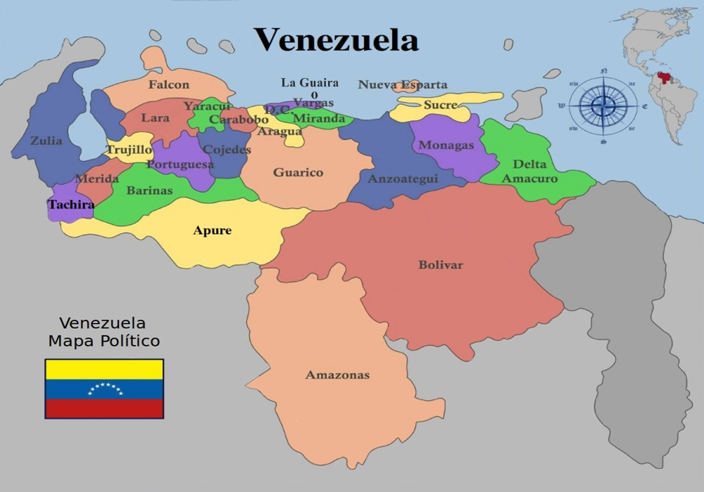
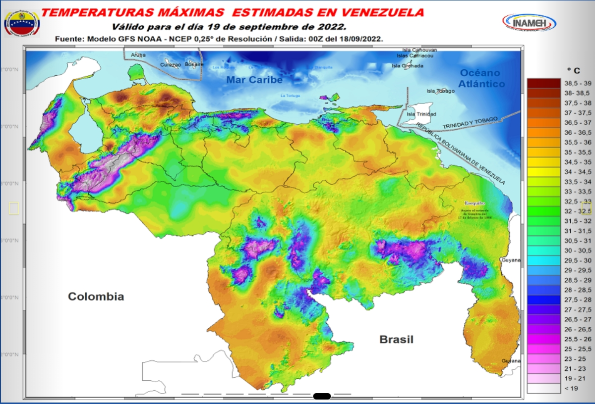
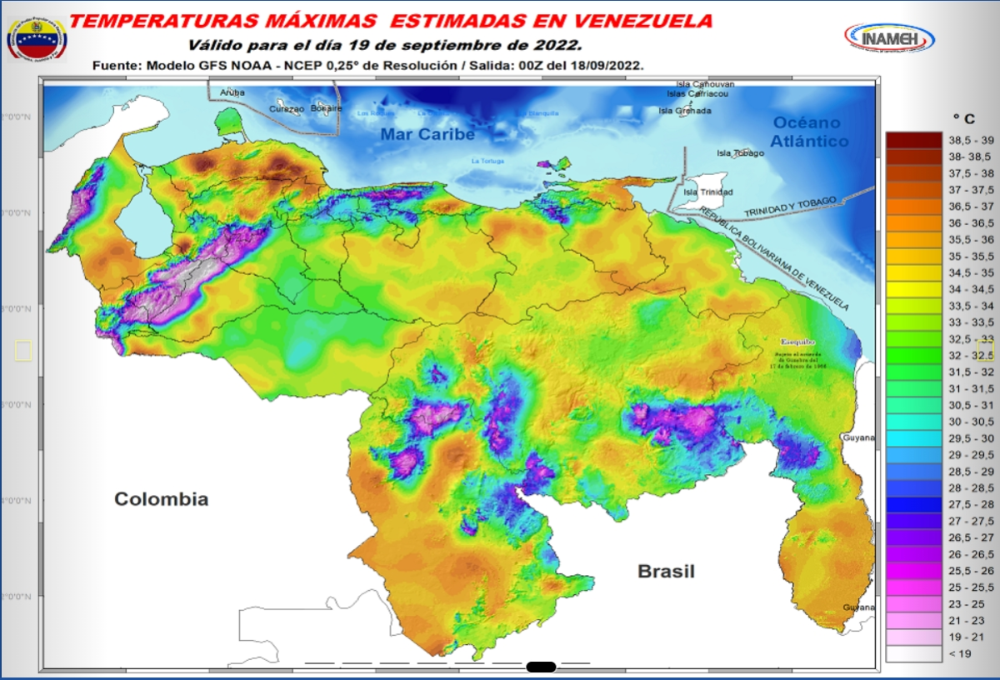

Realizado por:
Isaac Cordero Tapia
Daniel Bello Torres
-------------------------------------------------------------------------------------------
Las ciudades o partes del mundo con los mejores climas, son por excelencia los más cercanos a la línea del ecuador. Venezuela al estar tan cerca de ésta línea, la mayoría de su territorio tiene un clima cálido y tiende a variar dependiendo de la altura de los lugares. Debido a esto es difícil escoger cuál ciudad de este país es la mejor en cuánto al clima. Por este motivo hay que analizar cada una de las temperaturas tanto máximas como mínimas para poder seleccionar alguna región como la que tiene la mejor temperatura la mayoría del tiempo.
-------------------------------------------------------------------------------------------
*Tabla de temperaturas de los estados de venezuela
| Estado | Máxima | Mínima |
|---|---|---|
| Barinas | 35 | 5 |
| Distrito Capital | 37 | 16 |
| Falcón | 37 | 16 |
| Zulia | 37 | 12 |
| Mérida | 34 | 5 |
| Trujillo | 38 | 11 |
| Amazonas | 36 | 17 |
| Apure | 35 | 21 |
| Aragua | 30 | 17 |
| Bolívar | 34 | 16 |
| Carabobo | 30 | 18 |
| Cojedes | 32 | 16 |
| Delta Amacuro | 36 | 15 |
| Guárico | 36 | 15 |
| La Guaira | 35 | 21 |
| Lara | 37 | 16 |
| Miranda | 35 | 17 |
| Monagas | 36 | 15 |
| Nueva Esparta | 35 | 22 |
| Portuguesa | 34 | 12 |
| Sucre | 36 | 15 |
| Táchira | 34 | 5 |
| Yaracuy | 37 | 15 |
-------------------------------------------------------------------------------------------
Según los datos que se recolectaron y que se muestran en la tabla podemos concluir que carabobo y aragua son los estados de Venezuela con el mejor clima ya que en ambos no llega a hacer demasiado calor ni tampoco demasiado frío. Para poder saber cuál de las dos es el mejor, analizamos la precipitación media de ambos lugares y según la información encontrada en Aragua hay una precipitación media de 1100 mm y en carabobo 964,3 mm ; por lo tanto podríamos concluir que carabobo es mejor ya que es el lugar que menos llueve de entre los dos.
Al importar los datos vectoriales en GrassGis tuvimos como resultado estas imágenes
Este fue el resultado al importar los datos vectoriales
Este es el mapa luego de marcar las ciudades del país
Como referencia aquí hay dos mapas de calor del país de Venezuela que están divididos en sus respectivos estados
 
